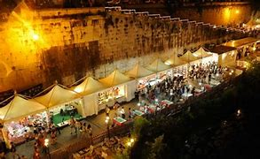
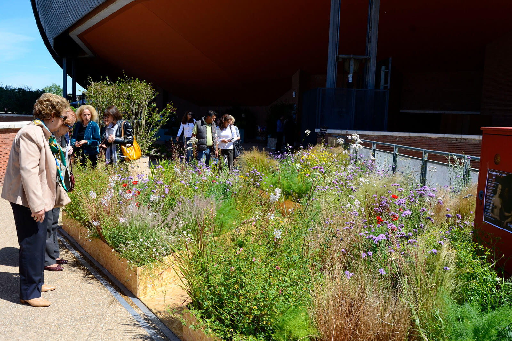

When in Rome one can keep themselves entertained and busy with the many events they have. for instance one could
The Estate Romane, or Roman Summer Festival, is an unmissable annual highlight. Held from June through September, the festival boasts an outdoor cinema on Isola Tiberina, bar and restaurant specials along the Tiber River, outdoor operas and ballets in the Baths of Caracalla, a lively calendar of nightlife events at Gay Village and many more shows throughout the city. Some of the most interesting events are held within cultural heritage sites, like the International Chamber Ensemble concerts at the courtyard of Sant’Ivo alla Sapienza church and the Concerti del Tempietto, held beneath the arcades of Teatro Marcello..

f you've got a green thumb and love basking in the sun come springtime, you should make it to Rome's annual garden festival held at Parco della Musica in North Rome. Designed by famed architect Renzo Piano, this impressive music complex is the perfect location for a festival that exalts plants, flowers and nature in all their glory. Admire colourful flora, pick up artisanal gifts, taste local street foods and take part in creative children’s workshops – it’s a great event for families.
Some events that have already took place early in the year are